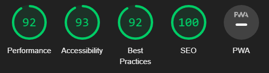

Vurdering av SEO, UU mobil og Desktop
Tilgjengelighetserklæring
SEO FØR
På del 3 Eksamen var SEO opp opp til 92, så jeg forbedret performance of accessibily opptimalisere det. Performance var veldig lav og dette måtte jeg gjøre noe med for at nettside skulle kjøre på bedre hastighet. jeg slettet ubrukte css, og fjernet ubrukte fontawsome filer
SEO ETTER

Performance var veldig lavt i del 3 og dette måtte jeg gjøre noe med for at nettside skulle kjøre på bedre hastighet. jeg slettet ubrukte css, og fjernet ubrukte fontawsome filer)
UU FØR OG ETTER
Siden jeg hadde artikkler bokser fra før bestemte jeg meg for å bruke de til å navigere i nettside, dette gjør det letere å navigere